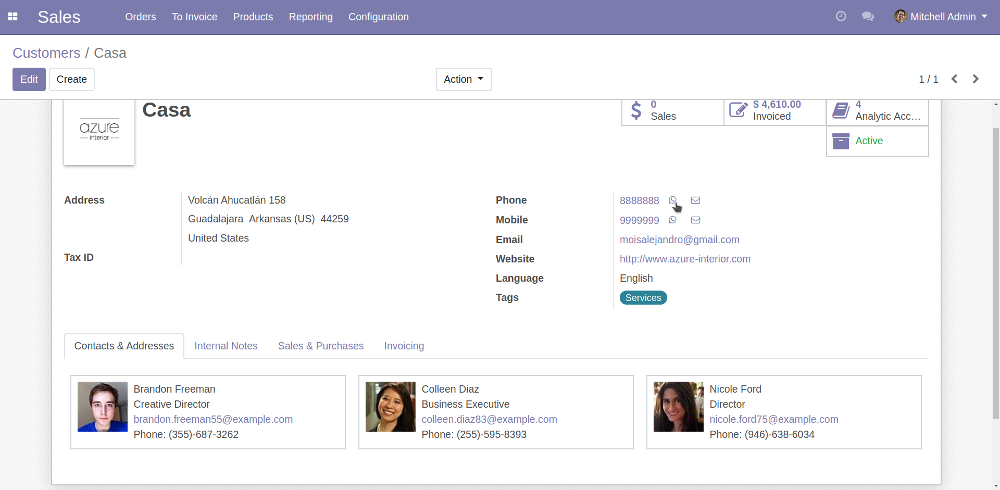
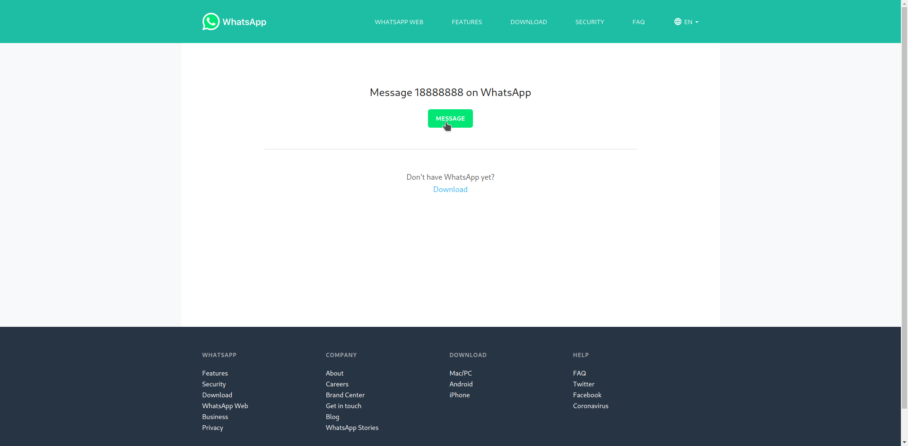

Message your contacts easily
Add one button beside the phone an mobile fields on the partners

Opens wa.me in one click
Add the possibility to send direct WhatsApp messages without having the partner in your
personal contact list. It use the partner county code automatically.
